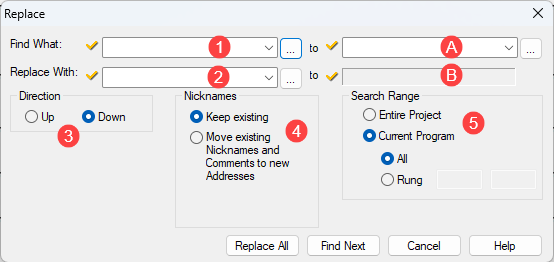
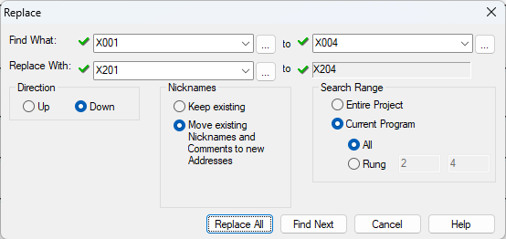

Topic: CL038

| Replace |
Topic: CL038
|
Replace is a tool that searches the Project or Current Program for instances of user-specified Memory Addresses and replaces those values with different user-specified values.
At your selection, you can search the Entire Project, the Current Program only, or you can conduct a search within a Specified Range of Rungs. To open the Replace dialog, click on the menu selection or use the Ctrl + R shortcut keystroke.

1 Find What: Type the Memory Address you want to locate or click the Browse Button  to open the Address Picker where you can select a Memory Address.
to open the Address Picker where you can select a Memory Address.
A Type the end of a range of Memory Addresses.
2 Replace With: Type the Memory Address or Nickname you want to locate or click the Browse Button  to open the Address Picker where you can select a Memory Address.
to open the Address Picker where you can select a Memory Address.
|
|
Note: The Memory Type in the ReplaceWith field needs to match the Memory Type in the Find What field. |
|
B The end of a range of Memory Addresses is automatically calculated.
3 Direction:Search Up from the cursor location or Search Down.
4 Nicknames: Keep Existing will change address locations, but leave the nicknames for an address unchanged. Move Existing Nicknames will replace an address location AND move the nicknames and comments from the old address to the new address. For example - If you have a Start push button wired to X001 and the Nickname is StartPB, then you move the button to X201. You can use the "Replace -Move existing Nickname's option to change all X001 references to X201. At the same time, the StartPB nickname and address comments will also be moved to X201.
5 Search Range: Select one of the choices. You can search the Entire Project (including Subroutines and Interrupts), or you can search the Current Program. If you search the Current Program, you can choose to search All Rungs or specify a Range of Rungs.
If you choose to search a Range, the default range is all rungs of the current program. You can change the starting rung and the ending rung in the boxes next to the word Rung.
The example below demonstrates the use of Replace to locate the input range, X001 - X004, and replace it with the input range X201 - X204. By also moving the nicknames and comments, this moves all digital inputs from the CPU base to the second input module in a single step.
